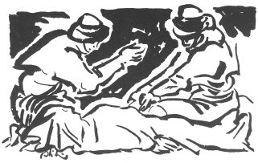

TERKEŞLİOĞLUNUN AĞIDI
Bana bu ağıdı yazdıran Çokak köyünden Ahmet Paşanın söylediğine göre 1850 yılında ünlü Avşar Beyi Terkeşlioğlu ölürken bu ağıdı kendi üstüne yakıyor. Terkeşlioğlu öldüğünde yüz yaşını geçkinmiş.
Kumaş pırtım çekilirdi
Ak konağa dökülürdü
Onu da bilir misin Dudu
Alem benden sakınırdı
Ak konakta yüksek baca
Varamıyom halim nice
Silkinip ata binerdim
Şimdi oldum kümküm koca
Çadırımız ortadirek
Bende de kalmadı yürek
Alnı kara perçemlice
Ak konağa oğlan gerek
Kır atı çekin dışarı
Bindirmiyor ne haşarı
Altmış şişek aşılardım
Ben de takardım nişanı
Sandığı sandal akçalı
Yükünün dibi bohçalı
Kirvesine at göndermiş
Üstü has kırmız keçeli
Gel Durdu şuradan otur
Söyleyim eksiğim yetir
Ben bu yıl görmedim yazı
Git yayladan çiçek getir
Odasına vardım ıssız
Yokladım güğümü susuz
Bu da elini koynuna sokmuş
Yeni oldum diyor öksüz
Askere vururlar boru
Arşedince döner geri
Nedicin battal ocağı
Şu canından olan deli
Battal ocak Çocuksuz ev, ocak.
Kümküm koca Beli bükülmüş, çok yaşlı.